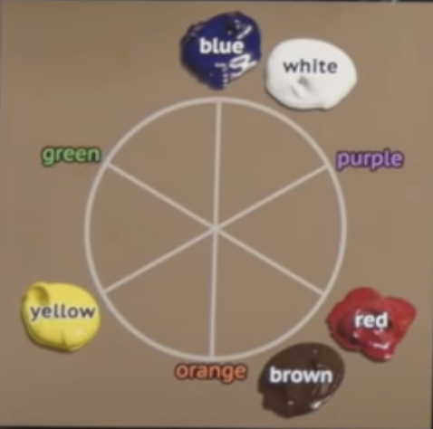

Mixing Colors

The basic process:
Detailed video from Draw Mix Paint
- Start with something. Pick colors you think will give you roughly the right color
- Get the value close. Use yellow or white to lighten or blue or brown to darken, and choose whichever you feel will push the color towards the target. If it gets to the point you're not sure if the value is too light or dark, thats pretty close.
- Adjust the color. Compare the color with the goal and think through the colors from above "which one is more yellow, which one is more orange, which one is more red...purple...blue...green?". If your value moves too far off as you adjust the color, correct the value again before continuing
- Gradually adjusting the color and keeping the value in check will let you hone in on the shade you want
Tips
- Complementary colors will mute each other
- A color checker is good for matching colors - Video explanation here
Troubleshooting Colors
Too Dark - yellow or white will lighten it
Too Light - Blue or brown (burnt umber) will darken it
Too Vibrant - mute with complementary color